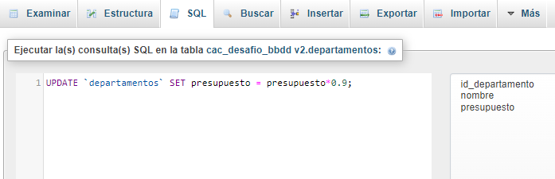
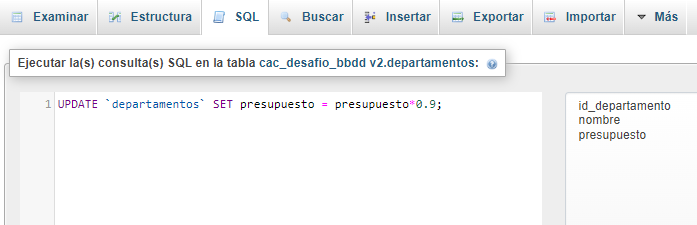
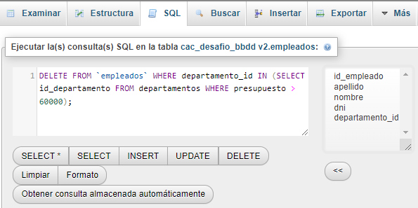

- Dada la siguiente tabla de datos, armar las tablas pertinentes con sus claves primarias y claves foráneas correspondiente:
- Realizar las siguientes consultas:
- Obtener los apellidos de los empleados
- Obtener los apellidos de los empleados sin repeticiones
- Obtener los datos de los empleados que tengan el apellido Lopez
- Obtener los datos de los empleados que tengan el apellido Lopez y los que tengan apellido Perez
- Obtener todos los datos de los empleados que trabajen en el departamento 14
- Obtener todos los datos de los empleados que trabajen en el departamento 37 y 77
- Obtener los datos de los empleados cuyo apellido comience con P
- Obtener el presupuesto total de todos los departamentos
- Obtener un listado completo de empleados, incluyendo por cada empleado los datos del empleado y de su departamento
- Obtener un listado completo de empleados, incluyendo el nombre y apellido del empleado junto al nombre y presupuesto de su departamento
- Obtener los nombres y apellidos de los empleados que trabajen en departamentos cuyo presupuesto sea mayor de 60000
- Añadir un nuevo departamento: Calidad con un presupuesto de 40000 y código 11, añadir un empleado vinculado al departamento recién creado: Esther Vazquez, DNI 892671
- Aplicar un recorte presupuestario del 10% a todos los departamentos
- Reasignar a los empleados del departamento de investigación (código 77) al departamento de informática (código 14)
- Despedir a los empleados del departamento de informática (código 14)
- Despedir a los empleados que trabajen en departamentos con un presupuesto superior a 60000 (en el enunciado figura superior a 90.000, no entraba ningun presupuesto, por lo que no se observaban cambios. Se opto por bajar el limite a 60.000).

 
Al consultar por los empleados del departamento de investigación, me devuelve una planilla vacía
El la lista de empleados, no quedo ningun empleado del departamento de informática
En la BBDD final se observa que solo quedaron los empleados de los departamentos de Calidad, Desarrollo
El departamento de Investigación tiene un presupuesto menos a 60000, pero en el apartado 14 se reasignaron a todos los empleados de investigación al de informáticaNi Elon Musk en Twitter se animó a correr en esta proporción!